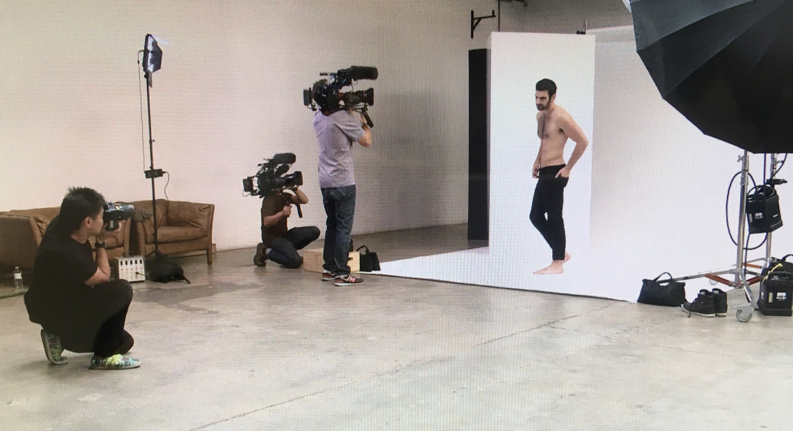
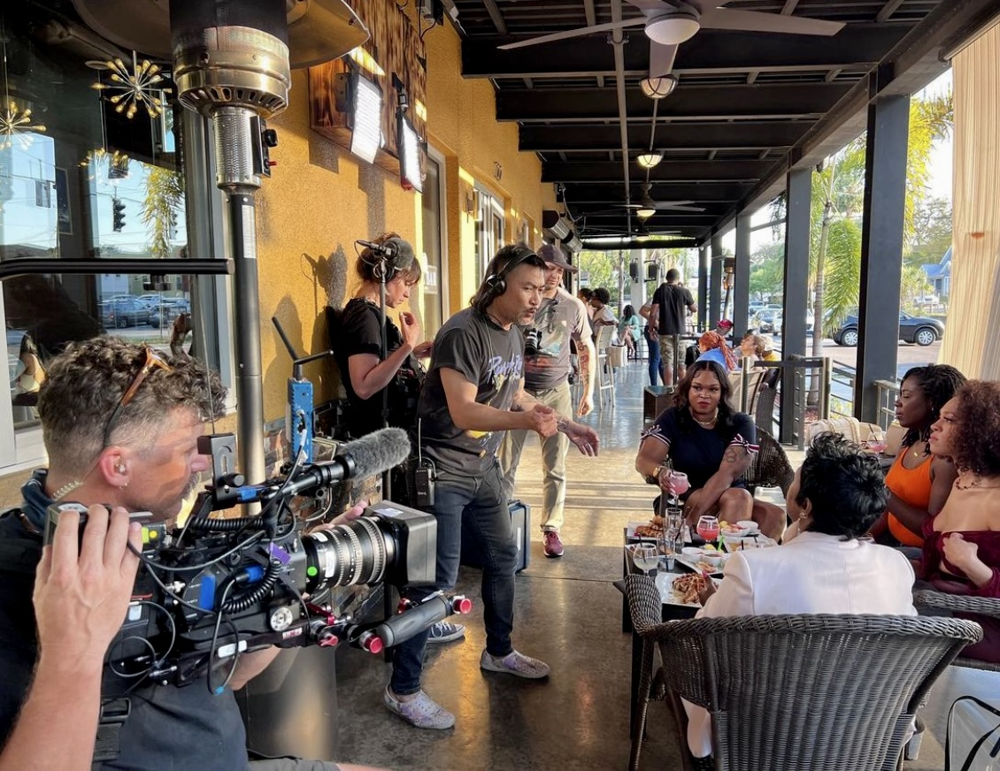
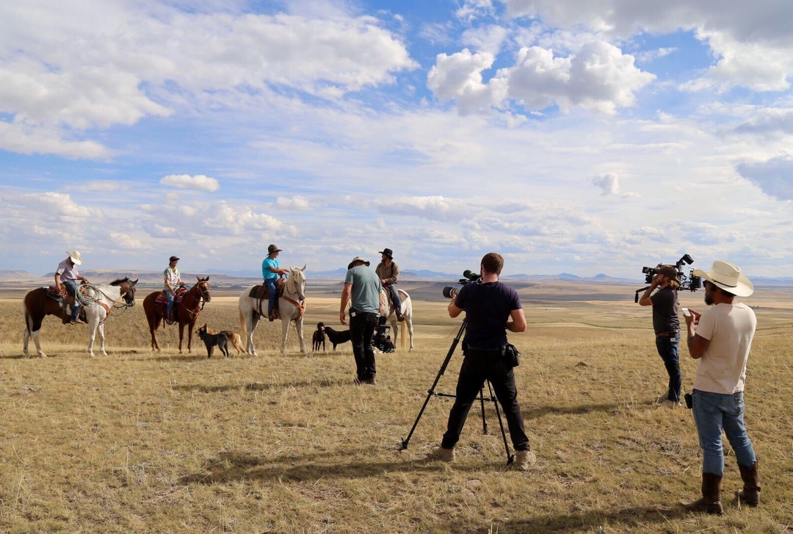
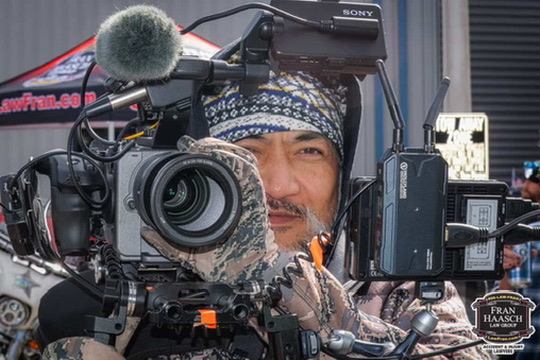
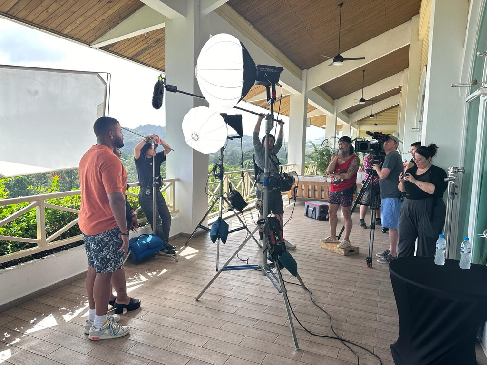

Brand Film
SoundHaven Audio
Product storytelling built around movement, durability and everyday life.
Watch film →Leander · Austin · Anywhere the story goes
Documentary-driven films for television, brands and the people building our community.
Film Reel
Producing, directing and field storytelling across national television, documentary and branded work.
Selected Work
Television, brand films, founder stories and event coverage built around real people and moments worth watching.
Product storytelling built around movement, durability and everyday life.
Watch film →
Craft, character and process with Jesse James.
Watch film →
Competition, community and personality captured in the middle of the action.
Watch film →
A people-first portrait of a Central Texas creative business.
Watch film →Television Experience
Producing real people, real stakes and unscripted moments for some of television's biggest shows.
Field Producing · Directing · Story · Talent · Multi-Camera
After years traveling the country telling stories for major television productions, Eddie brought that experience home to Central Texas.
Cyber Athlete Films gives businesses, founders, athletes and organizations access to thoughtful, television-level storytelling without hiring a giant agency.
The crew can stay small. The story doesn't have to.
Behind the Story
Good production is preparation, instinct and trust. This is what it looks like in the field.






About CAF
Cyber Athlete Films is led by producer and filmmaker Eddie Vu, based in the Austin area. His background spans national unscripted television, documentary production and commercial storytelling.
CAF brings that experience to projects of every scale: understanding the story, making people comfortable on camera and building something that looks great without losing what made it real.
Have a story?
Based in Leander. Serving Austin, Central Texas and productions nationwide.
Get in touch